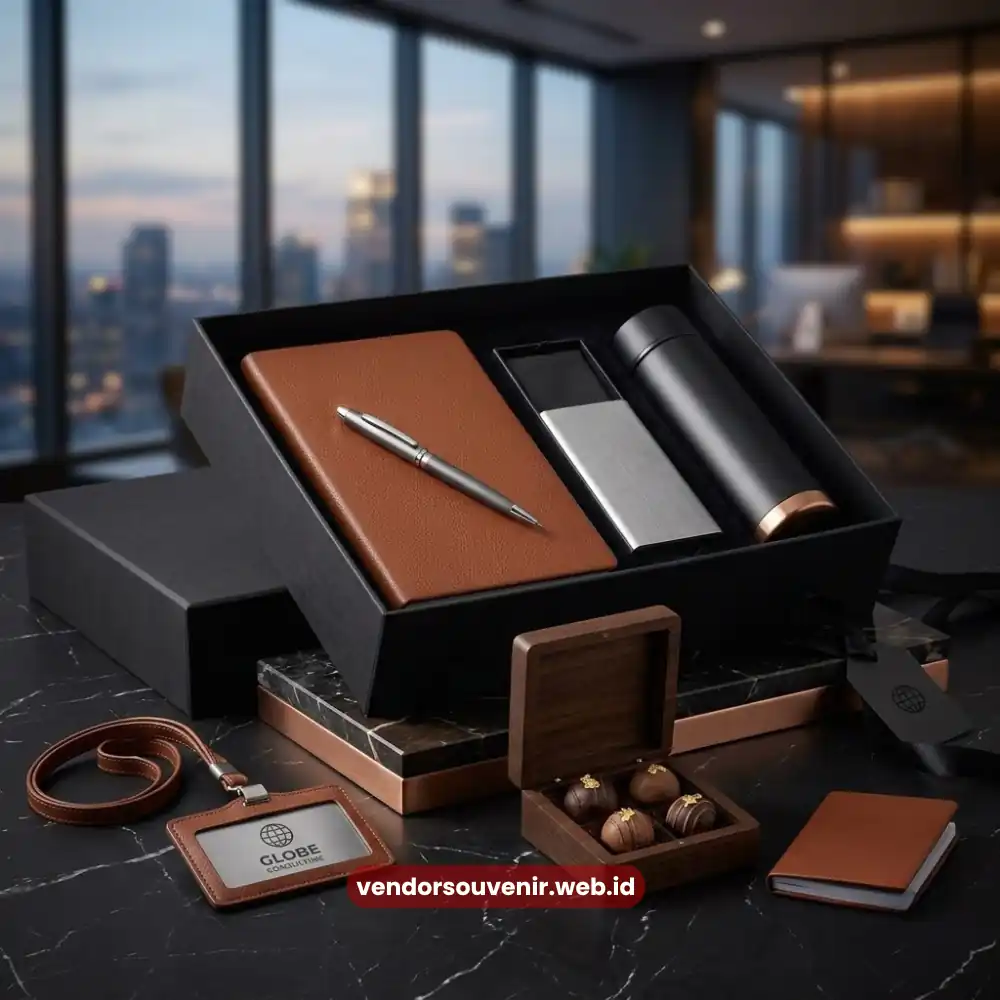

Daftar Isi
Isi seminar kit eksklusif umumnya terdiri dari tas seminar, notebook custom, pulpen bermerek, tumbler atau botol minum, serta flashdisk atau power bank, yang seluruhnya dirancang dengan branding logo perusahaan.
Kombinasi item ini dipilih karena fungsional bagi peserta selama acara sekaligus tetap digunakan setelah acara selesai. Pemilihan komponen yang tepat akan menentukan seberapa kuat kesan yang tertanam di benak peserta terhadap perusahaan Anda.
Bagi perusahaan yang sedang menyiapkan seminar, workshop, atau pelatihan korporat, memahami komponen ideal seminar kit menjadi langkah awal sebelum menentukan anggaran dan desain. Artikel ini membahas secara rinci setiap komponen umum dalam seminar kit eksklusif beserta pertimbangan pemilihannya.
- Tas, notebook, pulpen, dan tumbler menjadi empat komponen inti seminar kit eksklusif.
- Flashdisk dan power bank sering ditambahkan sebagai item bernilai tambah untuk kesan premium.
- Pemilihan material memengaruhi daya tahan dan persepsi kualitas terhadap brand perusahaan.
- Isi seminar kit dapat disesuaikan dengan tema warna dan identitas visual acara.
- VendorSouvenir menyediakan seluruh komponen ini dalam paket custom logo siap pesan.
Apa Saja Komponen Inti Seminar Kit Eksklusif?
Komponen inti seminar kit eksklusif dirancang untuk memenuhi kebutuhan praktis peserta selama acara berlangsung sekaligus membawa unsur branding perusahaan secara konsisten di setiap item.
Tas Seminar atau Totebag
Tas menjadi wadah utama yang menyatukan seluruh item dalam satu paket. Pemilihan bahan seperti kanvas, spunbond, atau bahan parasut memengaruhi kesan yang ditampilkan, mulai dari kesan kasual hingga korporat formal. Logo perusahaan umumnya ditempatkan di bagian depan tas dengan teknik sablon atau bordir agar tetap terlihat jelas dan tahan lama.
Notebook atau Notes Custom
Notebook dengan cover custom logo menjadi item yang paling sering digunakan peserta selama sesi berlangsung untuk mencatat materi. Pilihan cover mulai dari softcover hingga hardcover memberi fleksibilitas sesuai anggaran, sementara desain isi notes juga dapat disesuaikan dengan identitas visual perusahaan.
Pulpen Custom Logo
Pulpen menjadi salah satu item wajib dalam seminar kit karena fungsinya yang praktis dan selalu dibutuhkan peserta. Pulpen dengan finishing metal umumnya memberi kesan lebih premium dibandingkan pulpen plastik standar, sehingga sering dipilih untuk acara yang mengundang klien atau mitra bisnis penting.
Item Apa yang Membuat Seminar Kit Terlihat Lebih Premium?
Selain empat komponen inti, sejumlah item tambahan dapat meningkatkan kesan eksklusif dari seminar kit secara keseluruhan.
Tumbler atau Botol Minum Custom
Tumbler stainless dengan cetak logo menjadi item yang paling sering dipakai peserta dalam aktivitas sehari-hari setelah acara selesai, sehingga berperan besar dalam memperpanjang usia branding perusahaan di luar konteks acara.
Flashdisk atau Power Bank Custom Logo
Item elektronik seperti flashdisk atau power bank sering ditambahkan sebagai nilai lebih dalam paket seminar kit eksklusif, khususnya untuk acara yang mengundang klien eksternal atau mitra bisnis strategis. Item ini memberi kesan bahwa perusahaan memperhatikan detail dan kualitas souvenir yang diberikan.
Lanyard dan ID Card Holder
Untuk acara berskala besar dengan banyak peserta, lanyard dan ID card holder custom logo turut membantu proses identifikasi sekaligus menjadi bagian dari keseluruhan tampilan branding acara.

Contoh Seminar Kit Eksklusif dengan Aneka Item
Bagaimana Menyesuaikan Isi Seminar Kit dengan Tema Acara?
Penyesuaian isi seminar kit dengan tema acara umumnya dilakukan melalui pemilihan warna item, jenis material, dan gaya desain logo yang selaras dengan konsep acara secara keseluruhan. Acara formal seperti konferensi korporat biasanya menggunakan warna netral dan material premium, sementara acara internal seperti gathering karyawan dapat menggunakan kombinasi warna yang lebih dinamis sesuai identitas brand.
Konsistensi warna dan desain di seluruh item turut memengaruhi kesan profesional acara secara keseluruhan, sehingga sebaiknya direncanakan sejak tahap awal bersama tim produksi souvenir.
Isi seminar kit eksklusif idealnya mengombinasikan item fungsional dan bernilai branding tinggi, mulai dari tas, notebook, dan pulpen sebagai komponen inti, hingga tumbler dan item elektronik sebagai nilai tambah. Pemilihan komponen yang tepat akan memastikan seminar kit tidak hanya berguna selama acara, tetapi juga terus membawa identitas brand perusahaan setelahnya.
Ingin menyusun isi seminar kit eksklusif yang sesuai dengan tema dan anggaran acara perusahaan Anda? Konsultasikan kebutuhan Anda bersama VendorSouvenir dan dapatkan paket custom logo yang siap dikirim tepat waktu.

Solusi Gift Set dari Vendor Terpercaya
Butuh Bantuan Merancang Isi Seminar Kit?
Tim ahli kami siap membantu Anda menyusun paket isi seminar kit eksklusif yang menarik.
Pilihan barang akan disesuaikan dengan ketersediaan budget dan kebutuhan Anda.
Dapatkan penawaran harga terbaik untuk pesanan massal!
FAQ Seputar Isi Seminar Kit Eksklusif
Apa saja isi seminar kit eksklusif secara umum?
Isi umum meliputi tas seminar, notebook custom, pulpen bermerek, tumbler, serta flashdisk atau power bank dengan branding logo perusahaan.
Item apa yang paling sering digunakan peserta setelah acara selesai?
Tumbler dan tas seminar umumnya menjadi item yang paling sering digunakan peserta dalam aktivitas sehari-hari setelah acara berlangsung.
Apakah isi seminar kit bisa disesuaikan dengan anggaran perusahaan?
Ya, komposisi item dalam seminar kit dapat disesuaikan dengan anggaran per peserta tanpa mengorbankan konsistensi branding logo perusahaan.
Maroon Souvenir
Partner Corporate Gift terpercaya di Indonesia. Berpengalaman melayani ratusan perusahaan sejak 2018.
Lihat Portofolio Kami